6 patchwork
参考：https://github.com/thomasp85/patchwork
patchwork 用于组合多个 ggplot 对象，方法非常简单，直接用 + 连接这些对象即可：
p1 <- ggplot(mtcars) + geom_point(aes(mpg, disp))
p2 <- ggplot(mtcars) + geom_boxplot(aes(gear, disp, group = gear))
p1 + p2
当然，不必把 ggplot2 对象存储到某个变量中，而是可以直接通过绘图的叠加语法组合图形：
ggplot(mtcars) +
geom_point(aes(mpg, disp)) +
ggplot(mtcars) +
geom_boxplot(aes(gear, disp, group = gear))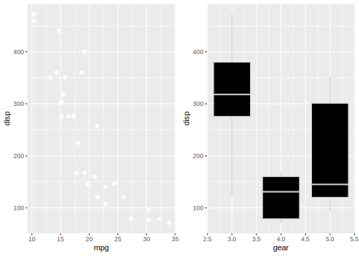
6.1 布局和嵌套
默认情况下，多个 ggplot 对象进行叠加，若一行空间已满，进入下一行：
p1 <- ggplot(mtcars) + geom_point(aes(mpg, disp))
p2 <- ggplot(mtcars) + geom_boxplot(aes(gear, disp, group = gear))
p3 <- ggplot(mtcars) + geom_smooth(aes(disp, qsec))
p4 <- ggplot(mtcars) + geom_bar(aes(carb))
p5 <- ggplot(mtcars) + geom_violin(aes(cyl, mpg, group = cyl))
p1 + p2 + p3 + p4 + p5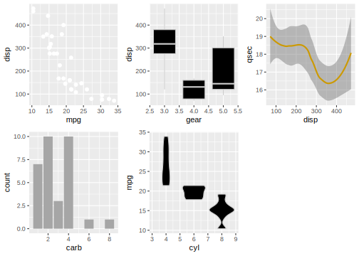
可以追加 plot_layout 控制 patchwork 组合图形的布局，以下是主要参数：
ncol、nrow: 组合后的维度
byrow: 与matrix()中类似，按行排列或按列排列
widths、heights: 一个指定各个 ggplot 对象在最终图形中相对宽度、高度的向量
# Use byrow to change how the grid is filled out
p1 + p2 + p3 + p4 + p5 + plot_layout(byrow = FALSE)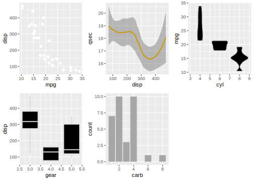
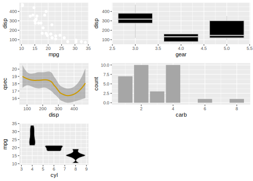
可以用 () 表示 ggplot 对象在组合时的层级关系：
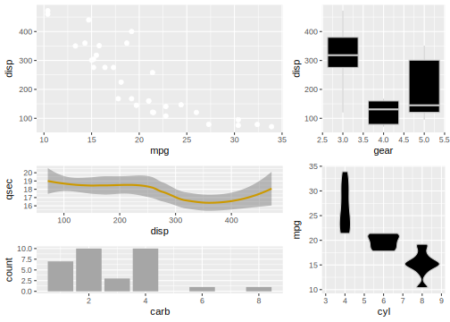
plot_spacer 是一个空的占位对象：
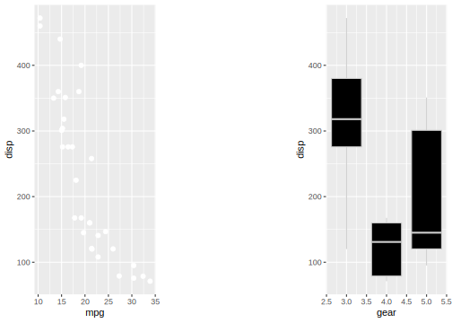
6.2 注解
plot_annotaion() 向组合对象添加注解，几个参数：
title、subtitle、caption: 最终组合对象的标题、副标题和注释tag_levels: 每个子对象的标签。集中选择： “a” 小写字母，“A” 大写字母，“1” 阿拉伯数字，“i” 小写罗马数字，“I” 大写罗马数字
tag_prefix、tag_suffix: 标签的前缀和后缀
p1 + p2 + plot_annotation(title = "A great plot!", caption = "Source: me",
tag_levels = "i", tag_prefix = "Fig ")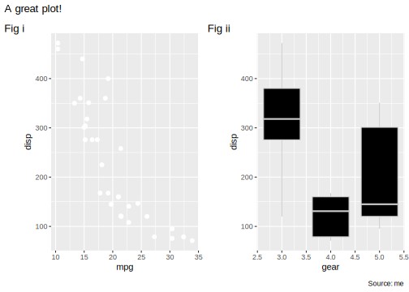
6.3 运算符
除了 + 以外， patchwork 还定义了一些运算符。
- 使其左侧的（全部）对象和右侧的（全部）对象处于同一层级：
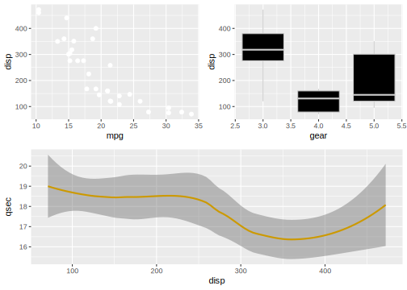
A note on semantics. If
- is read as minus its use makes little sense as we are not removing plots. Think of it as a hyphen instead…
| 和 \ 表示对象是否位于同一行：
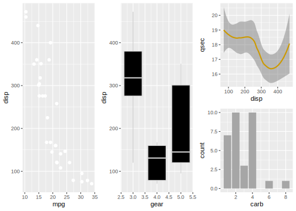
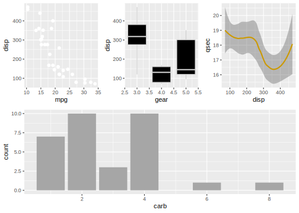
* 和 & 可以便捷地修饰组合对象中的元素，* 只作用于最顶层的元素，而 & 作用于所有元素：
## 所有元素应用 bbc_style()
windowsFonts(Helvetica = "TT Arial")
(p1 + (p2 + p3) + plot_layout(nrow = 2)) & bbplot::bbc_style()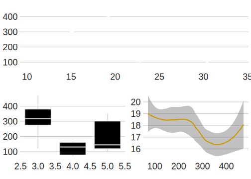
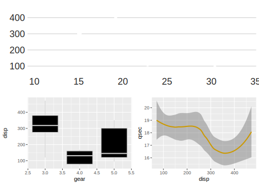